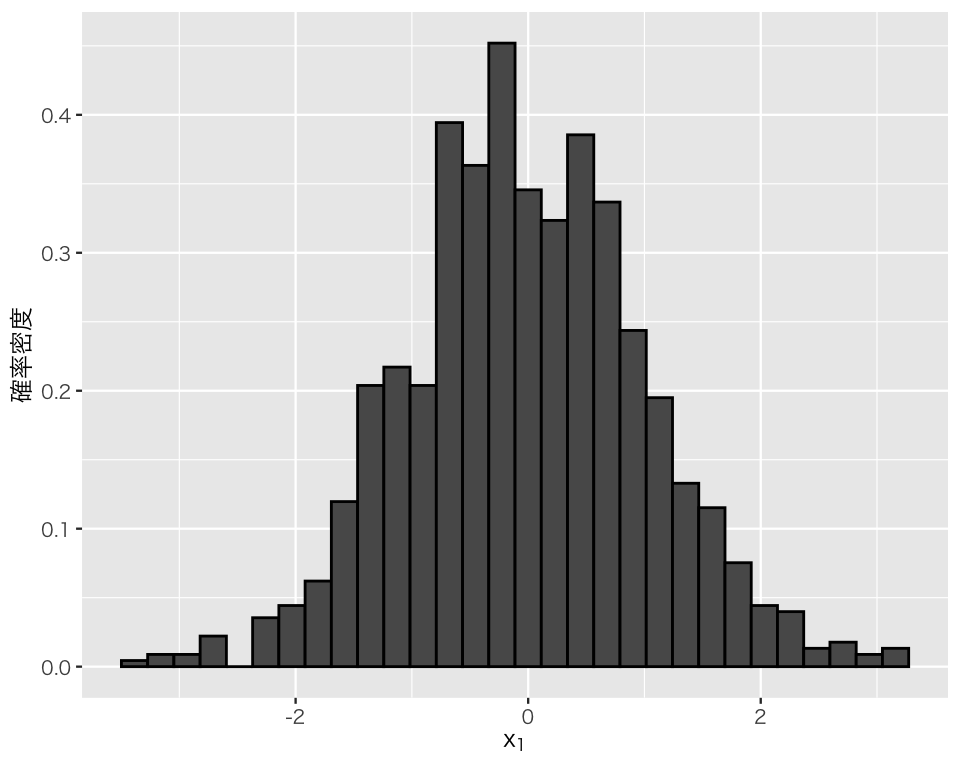
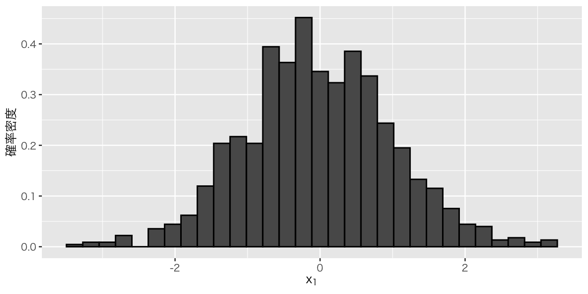

library(tidyverse)
## 図のなかで日本語を使えるようにする
## フォントの設定はお好みで
## （Unix/Linux ではIPAexフォントのインストールが必要かも）
if (.Platform$OS.type == "windows") { # Windows
library(fontregisterer)
my_font <- "Yu Gothic"
} else if (capabilities("aqua")) { # macOS
my_font <- "HiraginoSans-W3"
} else { # Unix/Linux
my_font <- "IPAexGothic"
}
theme_set(theme_gray(base_size = 9,
base_family = my_font))2 Quartoによるレポート作成
この実習の準備
2.1 基本
基本的な使い方は統計学1の授業で解説済みなので、統計学1の資料で復習してほしい。『私たちのR』のQuarto入門にもう少し詳しい説明があるので、そちらも合わせて参照されたい。
2.2 文の修飾
2.2.1 節の構成
文の中に節 (section) や小節 (subsection) などを作りたいときは、#（ハッシュ）を使う。ハッシュの数が多くなるほど、下の階層が構成される。今、皆さんが見ている「Quartoによるレポート作成」という資料では、# Quartoによるレポート作成 がハッシュ1つの節であり、## 基本 や ## 文の修飾 などがハッシュ2つの小節、### 節の構成 がハッシュ3つの小小節 (subsubsection) である。YAMLヘッダのnumber-sections: を true にすると、「2」「2．1」などの番号が自動的に付される。番号を付けたくないときは、number-sections: false にする。
Warning
ハッシュ記号の直後に半角スペースが1つ以上必要なので注意されたい。
Note
ただし、この資料の場合、資料全体を「本 (book)」と考えると、「2」は節 (section) ではなく章 (chapter) である。レポート・論文を構成する区切りは1節、2節、3節 \(\dots\) という節 (section) であり、それぞれの下の階層は 1.1節、1.2節などの小節 (subsection)、さらには1.1.1節などのsubsubsection である。
2.2.2 文字の修飾
文字を太字 (bold) にしたいときは、**太字**とすると太字になる。 また、イタリック（斜字体）にしたいときは、*italics* とすると italics になる。日本語をイタリックにはしない。 太字かつイタリックは、***bold italics***でbold italics になる。
これらの文字の修飾は、レポートや論文などでは使わない。
2.2.3 箇条書き
番号なしの箇条書きは、-、 +、 * で作る。記号の直後には半角スペースが必要である。
例えば、
- 項目1
- 項目2
- 項目2.1
- 項目2.2
- 項目3と入力すると、以下のように出力される。
- 項目1
- 項目2
- 項目2.1
- 項目2.2
- 項目3
番号付きの箇条書きは、1. のように、数字とドット（ピリオド）で作る。ドットの直後に半角スペースが必要である。数字は、全部1でもよいし、1.、2. などのように変えても良い。
例えば
1. 項目1
1. 項目2
1. 項目2.1
1. 項目2.2
1. 項目3と入力すると、以下のように出力される。
- 項目1
- 項目2
- 項目2.1
- 項目2.2
- 項目3
2.3 R コード
Rコードは、基本的にコードチャンクの中に書く。コードチャンクとは、
```{r}
# ここにRのコードを書く。
```というものであり、チャンクを挿入するキーボードショートカットは、
-
control+option+I(macOS) -
Control+Alt+I(Windows)
である。
各チャンクにチャンクオプションを付けることで、チャンクごとの挙動を制御することができる。 チャンクオプションは、#| という記号を使って、以下のように書く。
```{r}
#| echo: false
#| eval: true
#| message: false
#| warning: true
#| fig-height: 3
#| fig-width: 5
# ここにRコードを書く
```上で書いたオプションは、
- echo: コードを表示するかどうか。
falseで非表示。 - eval: コードを実行するかどうか。
falseでコードを実行しない。 - message: コード実行時のメッセージを表示するかどうか。
falseで非表示。 - warning: コード実行時の警告文を表示するかどうか。
falseで非表示。 - fig-height: 図の高さ。単位はインチ。
- fig-width: 図の幅。単位はインチ。
これら以外のチャンクオプションについては、公式ガイド を参照。
2.4 数式
2.4.1 数式・数学記号の基本
Quartoでは、\(\LaTeX\) と同じ方法で数式を書くことができる。
Note
\(\LaTeX\) について詳しく知りたい者には、奥村晴彦, 黒木裕介. 2020.『LaTeX2\(\varepsilon\) 美文書作成入門』（技術評論社）を参照されたい。
文書の中に数式を入れたいときは、数式を書くためのコードを$で挟み、文書のなかに挿入する。 例えば、単純な足し算は $1 + 3 = 4$ と書くことで、\(1 + 3 = 4\) と表示される。あるいは、$Y_i = \beta_0 + \beta_1 X_i + \varepsilon_i$ と書けば、\(Y_i = \beta_0 + \beta_1 X_i + \varepsilon_i\) となる。
数式を独立した行に表示したいときは、以下のようにする。
$$
\bar{x} = \frac{1}{N} \sum_{n=1}^N x_n
$$これは、次のように表示される。 \[ \bar{x} = \frac{1}{N} \sum_{n=1}^N x_n \]
複数行にわたる数式を書きたいときは、aligned 環境を使って以下のように書くことができる。
$$
\begin{aligned}
\bar{x}
&= \frac{1}{N} \sum_{n=1}^N x_n \\
&= \frac{1}{N} \left(x_1 + x_2 + \cdots + x_N \right)
\end{aligned}
$$上のコードでは、\\ で改行している。また、各行は & の位置で整列する。結果は次のようになる。 \[
\begin{aligned}
\bar{x}
&= \frac{1}{N} \sum_{n=1}^N x_n \\
&= \frac{1}{N} \left(x_1 + x_2 + \cdots + x_N \right)
\end{aligned}
\]
上の例からわかるとおり、分数は\frac{分子}{分母}で書くことができる。
数式でカッコを使うとき、() と [] はそのまま入力すればよいが、{}を使いたいときは \{ や\}のようにする必要がある。また、\left( \right) 、\left\{ \right\}、\left[ \right] のようにすると、カッコの中身に合わせてカッコの大きさを調節してくれる。例えば、
$$
(x - \frac{1}{2})(y - \frac{2}{\frac{3}{31}})^2
$$と入力すると、 \[ (x - \frac{1}{2})(y - \frac{2}{\frac{3}{31}})^2 \] と表示されるが、
$$
\left(x - \frac{1}{2} \right) \left(y - \frac{2}{\frac{3}{31}} \right)^2
$$と入力すると、 \[ \left(x - \frac{1}{2} \right) \left(y - \frac{2}{\frac{3}{31}} \right)^2 \] と、なる。
下付きの添字は、_（アンダースコア）を使って、x_i と書くと、\(x_i\)のように表示される。 ただし、添字が2文字以上のときにx_23 のようにすると\(x_23\)となってしまうので、\(x_{23}\)にするためにはx_{23}とする。
上付きの文字は、^（キャレット）を使ってx^aのように書くと、\(x^a\) のように表示される。 下付きの場合と同様に、2文字以上のときにはx^{a-b}のようにすると\(x^{a-b}\)となる。
2.4.2 よく使う記号
よく使う記号を以下に示す
| コード | 出力 | 使用例 |
|---|---|---|
\times |
\(\times\) | \(x \times y\) |
\cdot |
\(\cdot\) | \(x \cdot y\) |
\cdots |
\(\cdots\) | \(x_1 + x_2 + \cdots + x_N\) |
\dots |
\(\dots\) | \(a, b, \dots, z\) |
\Pr(.) |
\(\Pr(.)\) | \(\Pr(X =x )\) |
\sum |
\(\sum\) | \(\sum (x_i - \mu)^2\) |
\sum_{n = 1}^{N} |
\(\displaystyle \sum_{n = 1}^{N}\) | \(\displaystyle \sum_{n = 1}^{N} (x_n - \bar{x})^2\) |
\prod |
\(\prod\) | \(\displaystyle \prod_{n=1}^N x_n\) |
\sqrt{a} |
\(\sqrt{a}\) | \(\sqrt{xyz}\) |
\exp(.) |
\(\exp(.)\) | \(\exp(-\lambda)\) |
\log(.) |
\(\log(.)\) | \(\log(2a)\) |
\partial |
\(\partial\) | \(\displaystyle \frac{\partial f(x, y)}{\partial x}\) |
\int |
\(\int\) | \(\displaystyle \int_{a}^b f(x) dx\) |
\lim |
\(\lim\) | \(\displaystyle \lim_{n \to \infty} \sum_{i=1}^n \frac{1}{n!}\) |
\infty |
\(\infty\) | |
\sim |
\(\sim\) | \(X \sim \mbox{Normal}(\mu, \sigma)\) |
\to |
\(\to\) | |
\binom{n}{k} |
\(\binom{n}{k}\) | \(\displaystyle \binom{n}{k} = \frac{n!}{k! (n-k)!}\) |
\bar{x} |
\(\bar{x}\) | |
\hat{x} |
\(\hat{x}\) | |
\widehat{abcde} |
\(\widehat{abcde}\) | |
\tilde{x} |
\(\tilde{x}\) |
2.4.3 ギリシャ文字
ギリシャ文字も数式環境の中で使える。文章中にギリシャ文字を入れたいときは、$と$の間に以下のコードを入力する（よく使うものだけ挙げる）。
| 文字 | コード |
|---|---|
| \(\alpha\) | \alpha |
| \(\beta\) | \beta |
| \(\gamma\) | \gamma |
| \(\mu\) | \mu |
| \(\sigma\) | \sigma |
| \(\lambda\) | \lambda |
| \(\phi\) | \phi |
| \(\pi\) | \pi |
| \(\delta\) | \delta |
| \(\epsilon\) | \epsilon |
| \(\varepsilon\) | \varepsilon |
| \(\nu\) | \nu |
| \(\xi\) | \xi |
| \(\zeta\) | \zeta |
ギリシャ文字の大文字の書き方は、以下の2つのパタンに分かれる。
- コードの1文字目を大文字にする
- 例）\(\delta\)の大文字\(\Delta\) は
\Delta - 例）\(\phi\)の大文字\(\Phi\) は
\Phi
- 例）\(\delta\)の大文字\(\Delta\) は
- アルファベットの大文字をそのまま使う。
- 例）\(\alpha\)の大文字Aは
A - 例）\(\beta\)の大文字Bは
B
- 例）\(\alpha\)の大文字Aは
注意：
- 和算の記号\(\sum\) は
\Sigmaではなく、\sum-
\sum: \(\sum\) -
\Sigma: \(\Sigma\)
-
- 乗算の記号\(\prod\)は
\Piはなく\prod-
\prod: \(\prod\) -
\Pi: \(\Pi\)
-
2.5 図表
単に図を表示させるなら、ggplot()で作った図を plot() で示せばよい。
D <- tibble(x1 = rnorm(1000),
x2 = rnorm(1000, mean = -10, sd = 2))
p1 <- ggplot(D, aes(x = x1, y = after_stat(density))) +
geom_histogram(color = "black") +
labs(x = expression(x[1]),
y = "確率密度")
plot(p1)`stat_bin()` using `bins = 30`. Pick better value with `binwidth`.
チャンクオプションを使うことによって、表示する図の大きさを変えたり、図に通し番号とキャプションを付けたりすることができる。 例えば、
```{r}
#| message: false
#| fig-width: 6
#| fig-height: 3
#| fig-cap: "$x_1$のヒストグラム"
#| label: fig-hist-x1
plot(p1)
```と書けば、以下のようになる。
plot(p1)
図 (figure) のラベルは、必ずfig-から始まるようにする。上の例では、fig-hist-x1がラベルである。ラベルを付けておくと、文章中でその図に言及する際、「@fig-hist-x1は〜」と書くと、「図 2.1 は〜」のように表示される。この番号は自動で付される。
試しにもう1つ図を作って表示してみよう。まずは、図を作る。
p2 <- ggplot(D, aes(x = x2, y = after_stat(density))) +
geom_histogram(color = "black") +
labs(x = expression(x[2]),
y = "確率密度")この図を、以下のコードで表示する。
```{r}
#| message: false
#| fig-width: 5
#| fig-height: 5
#| fig-cap: "$x_2$のヒストグラム"
#| label: fig-hist-x2
plot(p2)
```以下の結果が得られる。
plot(p2)「@fig-hist-x2 は\(x_2\)のヒストグラムである」と書けば、「図 2.2 は\(x_2\)のヒストグラムである」というように、自動的に正しい図番号が示される。
表についても、図と同様にラベルをつけて、自動的に番号を付すことができる。 Markdown での表は、次のようにして作ることができる。
| 列1 | 列2 | 列3 |
| :----- | :-----: | -----: |
| $x_{11}$ | $x_{12}$ | $x_{13}$ |
| $x_{21}$ | $x_{22}$ | $x_{23}$ |
: Markdown で表を作る例 {#tbl-mdtable1 .striped}| 列1 | 列2 | 列3 |
|---|---|---|
| \(x_{11}\) | \(x_{12}\) | \(x_{13}\) |
| \(x_{21}\) | \(x_{22}\) | \(x_{23}\) |
:--- の列は左揃え、:---: は中央揃え、---: は右揃えである。表の下の : の後に表 (table) のキャプションをつけることができる。その後の{}の中に#tbl- から始まるラベルをつけることができる。.striped はオプションで、これをつけると表の背景の色が、白とグレーが交互に現れるストライプになる。
「@tbl-mdtable1 は Markdownで表を作る例である」と書くと、「表 2.1 は Markdownで表を作る例である」と表示される。
Rのコードで表を作ることもできる。 例えば、
```{r}
#| tbl-cap: "Rで表を作る例"
#| label: tbl-Rtable
#| echo: false
D |>
head() |>
knitr::kable()
```と書くと、以下のようになる。
| x1 | x2 |
|---|---|
| -0.2788004 | -9.669613 |
| 0.0399019 | -10.729475 |
| -0.2332952 | -5.895507 |
| 1.0039462 | -10.446513 |
| 0.1779112 | -13.815952 |
| 0.4661605 | -11.515518 |
先程と同様、「@tbl-Rtable はRで表を作る例である」と書くと、「表 2.2 は Rで表を作る例である」と表示される。
Rコードでの表の作り方については、必要になったときにもう少し詳しく説明する。